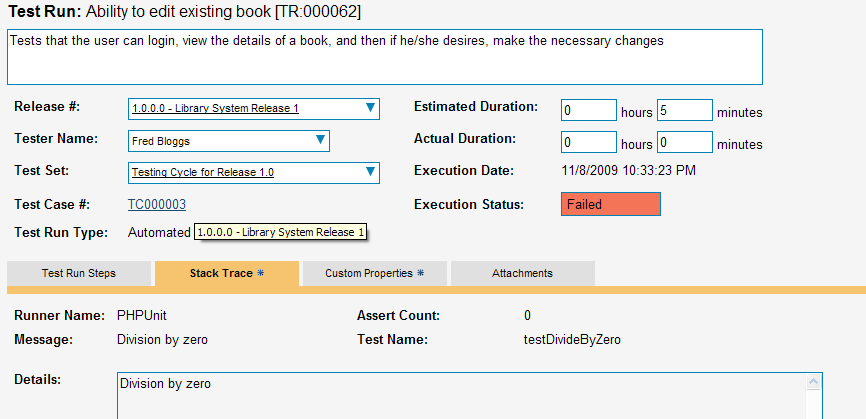

Integrating with PHPUnit
Installing the PHPUnit Extension
This section outlines how to install the SpiraTest Extension for PHPUnit onto a workstation so that you can then run automated PHPUnit tests against a PHP application and have the results be recorded as test runs inside SpiraTest. It assumes that you already have a working installation of SpiraTest v3 or later, and a working PHP development environment. If you have an earlier version of SpiraTest you will need to upgrade to at least v3 before trying to use this extension.
To obtain the latest version of the SpiraTest PHPUnit extension you simply need to go to http://www.inflectra.com/SpiraTest/Downloads.aspx page and download the PHPUnit Extension compressed archive (.zip). This process is described in the SpiraTest Administration Guide in more detail.
The PHPUnit extension is provided as a set of PHP source files that can be imported into your existing unit tests to add the SpiraTest reporting functionality. Once you have downloaded the Zip archive, you simply need to uncompress it into a folder of your choice on your local system (e.g. C:\Program Files\SpiraTest\PHPUnit Extension)
Now to use the extension within your test cases, you need to first make sure that the folder is added to the PHP include_path. The method for doing this is dependent on the platform you're using, so please refer to the documentation on php.org for details on the appropriate method for your platform. Alternatively you can copy the PHPUnit extension files to the root of the PHP installation and then just include the extension files using the root folder syntax.
Once you have completed these steps, you are now ready to begin using your PHPUnit test fixtures with SpiraTest.
Using PHPUnit with SpiraTest
The typical code structure for a PHPUnit test suite and test case coded in PHP is as follows:
a) Sample Test Suite
<?php /** * * @author Inflectra Corporation * @version 0 * */ require_once 'PHPUnit/Framework.php'; require_once 'PHPUnit/TextUI/ResultPrinter.php'; require_once './SimpleTest.php'; // Create a test suite that contains the tests // from the ArrayTest class $suite = new PHPUnit_Framework_TestSuite('SimpleTest'); // Create a test result and attach the default console text listener $result = new PHPUnit_Framework_TestResult; $textPrinter = new PHPUnit_TextUI_ResultPrinter; $result->addListener($textPrinter); // Run the tests and print the results $result = $suite->run($result); $textPrinter->printResult($result); ?> b) Sample Test Case <?php require_once 'PHPUnit/Framework/TestCase.php'; /** * Some simple tests * * @author Inflectra Corporation * @version 0 * */ class SimpleTest extends PHPUnit_Framework_TestCase { protected $fValue1; protected $fValue2; /** * Sets up the unit test */ protected function setUp() { $this->fValue1= 2; $this->fValue2= 3; } /** * Tests the addition of the two values */ public function testAdd() { $result = $this->fValue1 + $this->fValue2; // forced failure result == 5 $this->assertTrue ($result == 6); } /** * Tests division by zero */ /* public function testDivideByZero() { $zero = 0; $result = 8 / $zero; $result++; // avoid warning for not using result } /** * Tests two equal values */ /* public function testEquals() { $this->assertEquals(12, 12); $this->assertEquals(10, 10); $num1 = 12; $num2 = 12; $this->assertEquals($num1, $num2); $this->assertEquals("Size", 12, 13); $this->assertEquals("Capacity", 10, 199, 0); } /** * Tests success */ /* public function testSuccess() { //Successful test $this->assertEquals(12, 12); } } ?>
The PHP class is marked as a PHPUnit test case by inheriting from the PHPUnit_Framework_TestCase base class, and the individual test methods are identified by using the 'test' prefix, with special setUp() and tearDown() methods reserved for the respective purposes. When you open up the class in a PHPUnit runner or execute from the command line it loads all the test classes and executes all the methods marked with 'test...' in turn.
Each of the Assert statements is used to test the state of the application after executing some sample code that calls the functionality being tested. If the condition in the assertion is true, then execution of the test continues, if it is false, then a failure is logged and PHPUnit moves on to the next test method.
So, to use SpiraTest with PHPUnit, each of the test cases written for execution by PHPUnit needs to have a corresponding test case in SpiraTest. These can be either existing test cases that have manual test steps or they can be new test cases designed specifically for automated testing and therefore have no defined test steps. In either case, the changes that need to be made to the PHPUnit test case and test suite for SpiraTest to record the PHPUnit test run are illustrated below:
a) Sample Test Suite
<?php /** * Passes a list of tests to be executed to PHPUnit and adds the custom SpiraTest Listener * * @author Inflectra Corporation * @version 0 * */ require_once 'PHPUnit/Framework.php'; require_once 'PHPUnit/TextUI/ResultPrinter.php'; require_once './SimpleTest.php'; require_once '../SpiraListener/Listener.php'; // Create a test suite that contains the tests // from the ArrayTest class $suite = new PHPUnit_Framework_TestSuite('SimpleTest'); //Set the timezone identifier to match that used by the SpiraTest server date_default_timezone_set ("US/Eastern"); //Create a new SpiraTest listener instance and specify the connection info $spiraListener = new SpiraListener_Listener; $spiraListener->setBaseUrl ('http://localhost/SpiraTeam'); $spiraListener->setUserName ('fredbloggs'); $spiraListener->setPassword ('fredbloggs'); $spiraListener->setProjectId (1); $spiraListener->setReleaseId (1); $spiraListener->setTestSetId (1); // Create a test result and attach the SpiraTest listener // object as an observer to it (as well as the default console text listener) $result = new PHPUnit_Framework_TestResult; $textPrinter = new PHPUnit_TextUI_ResultPrinter; $result->addListener($textPrinter); $result->addListener($spiraListener); // Run the tests and print the results $result = $suite->run($result); $textPrinter->printResult($result); ?>
b) Sample Test Case
<?php require_once 'PHPUnit/Framework/TestCase.php'; /** * Some simple tests using the ability to return results back to SpiraTest * * @author Inflectra Corporation * @version 0 * */ class SimpleTest extends PHPUnit_Framework_TestCase { protected $fValue1; protected $fValue2; /** * Sets up the unit test */ protected function setUp() { $this->fValue1= 2; $this->fValue2= 3; } /** * Tests the addition of the two values */ public function testAdd__2() { $result = $this->fValue1 + $this->fValue2; // forced failure result == 5 $this->assertTrue ($result == 6); } /** * Tests division by zero */ /* public function testDivideByZero__3() { $zero = 0; $result = 8 / $zero; $result++; // avoid warning for not using result } /** * Tests two equal values */ /* public function testEquals__4() { $this->assertEquals(12, 12); $this->assertEquals(10, 10); $num1 = 12; $num2 = 12; $this->assertEquals($num1, $num2); $this->assertEquals("Size", 12, 13); $this->assertEquals("Capacity", 10, 199, 0); } /** * Tests success */ /* public function testSuccess__5() { //Successful test $this->assertEquals(12, 12); } } ?>
Firstly, each of the individual test methods is appended with two underscores followed by the ID of the corresponding test case in SpiraTest. So for example testSuccess() is now testSuccess__5() as it maps to test case TC00005 inside SpiraTest.
Second, in the Test Suite class, the PHPUnit TestResult object is passed an additional PHPUnit listener (in addition to the default one). This special listener class intercepts the results from the test run during execution and uses it to generate the web-service messages that are sent to SpiraTest to communicate the test results.
The following attributes need to be set on the instance of the SpiraListener_Listener() object so that the extension can access the SpiraTest repository:
baseUrl -- The base URL used to access your instance of SpiraTest (e.g. http://myserver/SpiraTest). It should include the protocol (e.g. http/https), the server-name, the port number (if not 80/443) and the virtual directory (if there is one).
userName - A valid username for the instance of SpiraTest that has access to the project specified above
password - A valid password for the user specified above
projectId -- The ID of the project inside SpiraTest (this can be found on the project homepage in the "Project Overview" section)
releaseId - The ID of the SpiraTest release to associate the test run with. This can be found on the releases list page (click on the Planning > Releases tab). If you don't want to associate the test run with a specific release, just use the value -1 to indicate N/A.
testSetId - The ID of the SpiraTest test set to associate the test run with. This can be found on the test set list page (click on the Testing > Test Sets tab). If you don't want to associate the test run with a specific test set, just use the value -1 to indicate N/A.
The SpiraListener_Listener class can also be called with the parameters as the constructor arguments:
//Create a new SpiraTest listener instance and specify the connection info $spiraListener = new SpiraListener_Listener ( 'http://localhost/SpiraTeam', 'fredbloggs', 'fredbloggs', 1, 1, 1);
You can also attach the listener to the class declaratively by adding it to the phpunit.xml configuration file instead of adding through PHP code:
<phpunit> <listeners> <listener class="SpiraListener_Listener" file="../SpiraListener/Listener.php"> <arguments> <!-- URL --> <string>http://localhost/SpiraTeam</string> <!-- User Name --> <string>fredbloggs</string> <!-- User Password --> <string>fredbloggs</string> <!-- Project ID --> <integer>1</integer> <!-- Release ID --> <integer>1</integer> <!-- Test Set ID --> <integer>1</integer> </arguments> </listener> </listeners> <testsuites> <testsuite name="Sample Suite"> <directory>.</directory> <file>./SampleSuite.php</file> </testsuite> </testsuites> </phpunit>
Now all you need to do is save your code, launch PHPUnit, run the test suite as you would normally do, and when you view the test cases in SpiraTest, you should see a PHPUnit automated test run displayed in the list of executed test runs:

Clicking on one of the PHPUnit test runs will bring up a screen that provides information regarding what PHPUnit test method failed, what the error was, together with the associated code stack-trace:

Congratulations... You are now able to run PHPUnit automated tests and have the results be recorded within SpiraTest. The sample test suite SampleSuite.php and sample test case SampleTest.php are provided with the installation in the Samples subfolder.